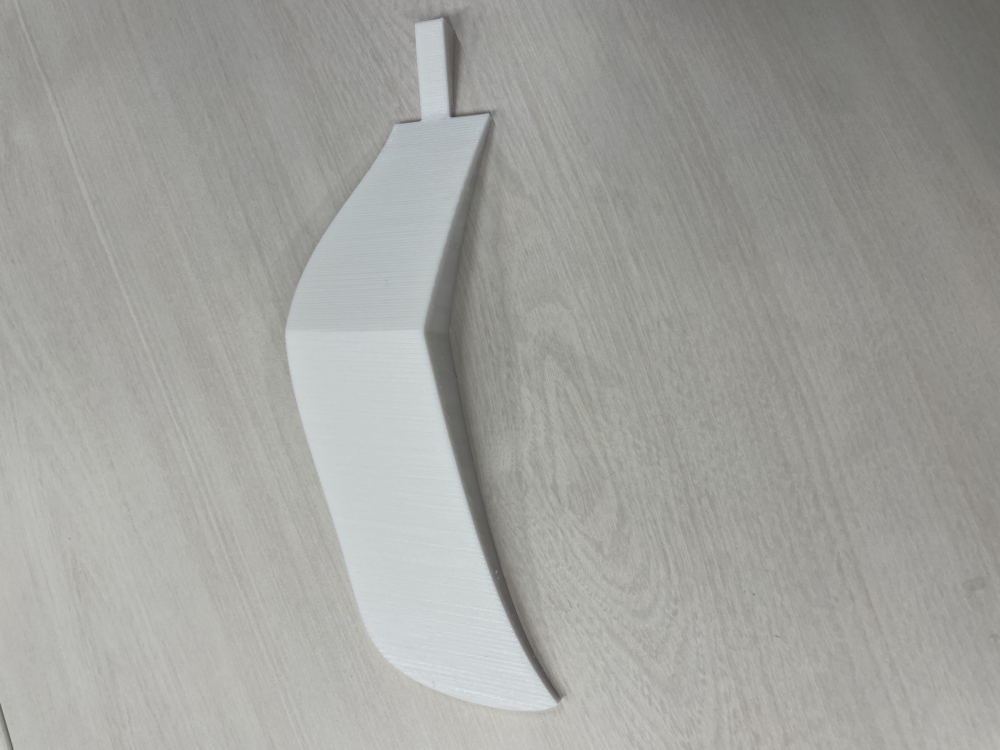
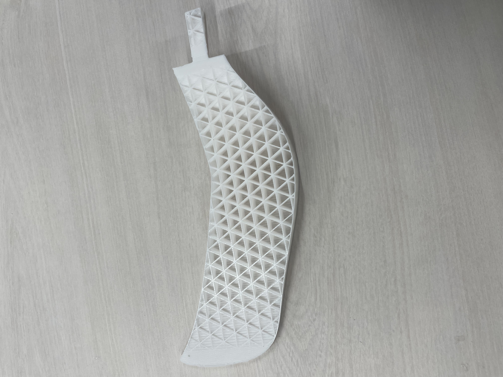
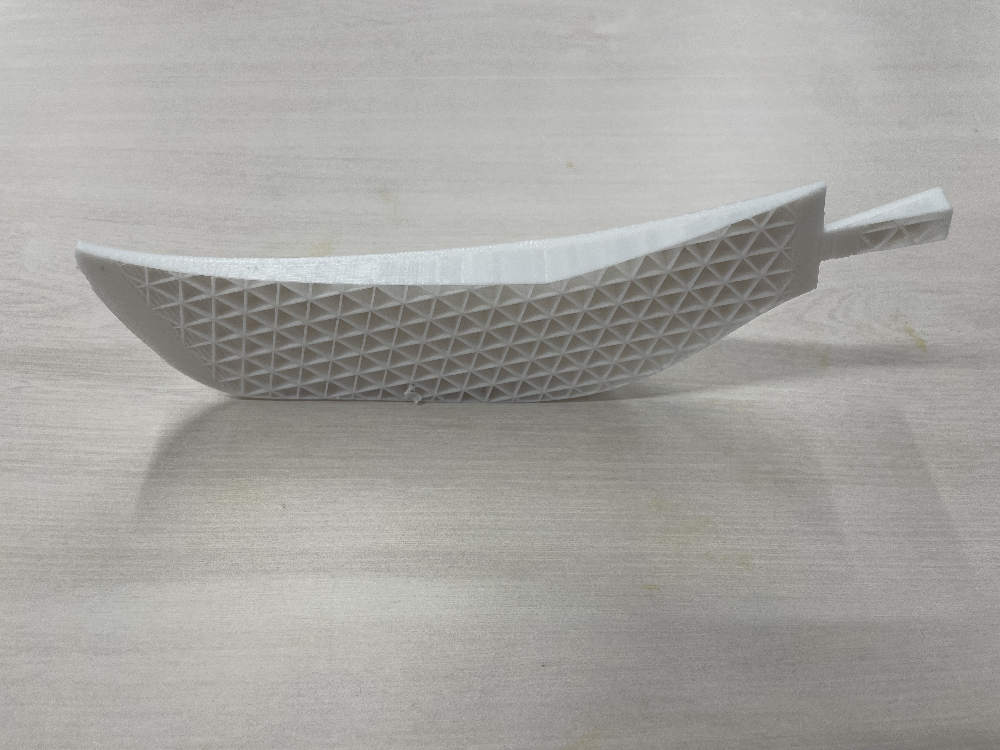
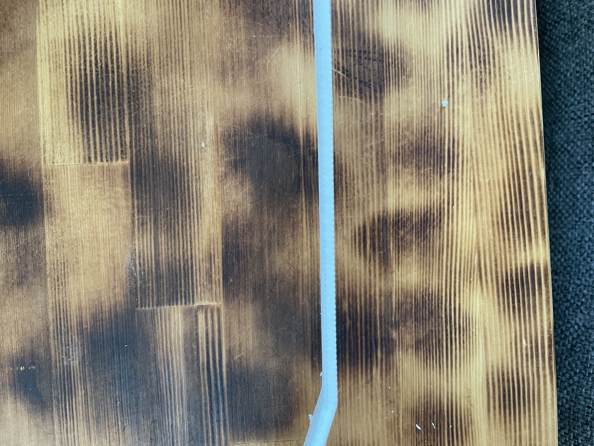
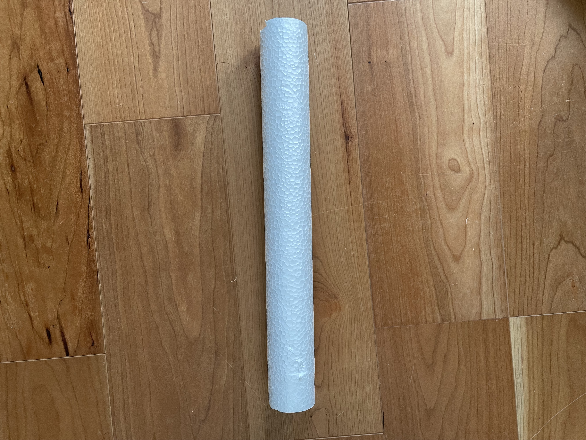
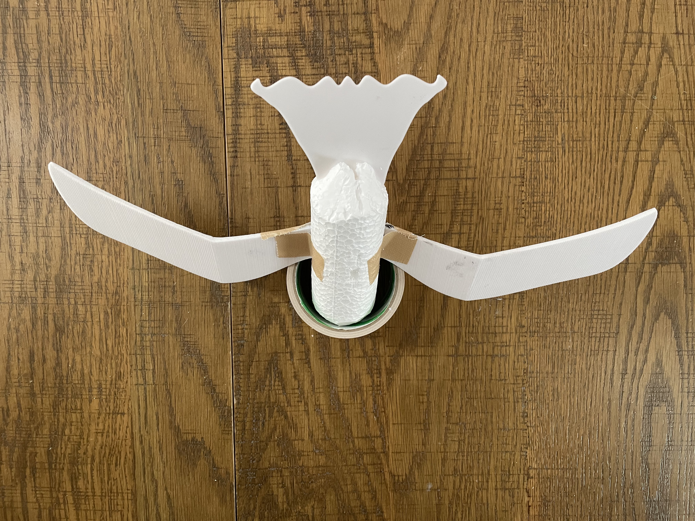

制作
作成するきっかけ
海浜公園でウミネコかカモメのどちらかを見たことがきっかけ。
小さい頃遊んでいた紙飛行機を、その鳥をモデルに3Dプリンターで小さなグライダーを作った。
羽をスケッチし、それを3Dプリンターで作成。



思った以上に厚みが出てしまったためやすりで少し整えた。

買った発泡スチロールに羽を刺し、作ろうとした。

完成品だが、羽が安定せず急遽ガムテープで補強。
完成品

別向き

問題点が多くあり失敗でした。
反省
- 骨組みとして発報スチロールの面積が広いため空気抵抗が大きい。もっと薄く板を立てたようなもので。
- 羽が厚く重い。飛ばしたいのなら第一に軽量化する。
前ページ